Common Visualization Types in R
Martin Schweinberger
2020-09-29

Introduction
This tutorial introduces different types of data visualization. The entire R-markdown document for the tutorial can be downloaded here. A more in-depth and highly recommendable resource for data visualization in R is Wickham (2016). A more general introduction to data visualization - which is still highly recommendable is Healy (2018).
Different philosophies: base R, lattice, and ggplot
A few words on different frameworks for creating graphics in R are in order. There are three main frameworks in which to create graphics in R. The basic framework, the lattice framework, and the ggplot or tidyverse framework.
The base R framework
The base R framework is the oldest of the three and is included in what is called the base R - a collection of about 30 packages that are automatically activated/loaded when you start R. The idea behind the “base” environment is that the creation of graphics is seen in analogy to a painter who paints on an empty canvass. Each line or element is added to the graph consecutively which oftentimes leads to code that is very comprehensible but also very long.
The lattice framework
The lattice environment was a follow-up to the base framework and it complements it insofar as it made it much easier to display various variables and variable levels simultaneously. The philosophy of the lattice-package is quite different from the philosophy of base: whereas everything had to be specified in base, the graphs created in the lattice environment require only very little code but are therefore very easily created when one is satisfied with the design but vey labor intensive when it comes to customizing graphs. However, lattice is very handy when summarizing relationships between multiple variable and variable levels.
The ggplot framework
The ggplot environment was written by Hadley Wickham and it combines the positive aspects of both the base and the lattice package. It was first publicized in the gplot and ggplot1 packages but the latter was soon repackaged and improved in the now most widely used package for data visualization: the ggplot2 package. The ggplot environment implements a philosophy of graphic design described in builds on The Grammar of Graphics by Leland Wilkinson (Wilkinson 2012).
The philosophy of ggplot2 is to consider graphics as consisting out of basic elements (called aesthetics and they include, for instance, the data set to be plotted and the axes) and layers that overlaid onto the aesthetics. The idea of the ggplot2 package can be summarized as taking “care of many of the fiddly details that make plotting a hassle (like drawing legends) as well as providing a powerful model of graphics that makes it easy to produce complex multi-layered graphics.”
Thus, ggplots typically start with the function call (ggplot) followed by the specification of the data, then the aesthetics (aes), and then a specification of the type of plot that is created (geom_line for line graphs, geom_box for box plots, geom_bar for bar graphs, geom_text for text, etc.). In addition, ggplot allows to specify all elements that the graph consists of (e.g. the theme and axes)
Preparation and session set up
This tutorial is based on R. If you have not installed R or are new to it, you will find an introduction to and more information how to use R here. For this tutorials, we need to install certain packages from an R library so that the scripts shown below are executed without errors. Before turning to the code below, please install the packages by running the code below this paragraph. If you have already installed the packages mentioned below, then you can skip ahead ignore this section. To install the necessary packages, simply run the following code - it may take some time (between 1 and 5 minutes to install all of the libraries so you do not need to worry if it takes some time).
# install libraries
install.packages(c("knitr", "lattice", "ggplot2", "dplyr",
"likert", "scales", "vcd", "tm", "stringr",
"SnowballC", "tidyr", "gridExtra", "knitr",
"DT", "stringr", "wordcloud"))Once you have installed R, R-Studio, and have also initiated the session by executing the code shown above, you are good to go.
Getting started
Before turning to the graphs, we will load the packages for this tutorial.
# activate packages
library(knitr)
library(lattice)
library(ggplot2)
library(dplyr)##
## Attaching package: 'dplyr'## The following objects are masked from 'package:stats':
##
## filter, lag## The following objects are masked from 'package:base':
##
## intersect, setdiff, setequal, unionlibrary(likert)## Loading required package: xtable##
## Attaching package: 'likert'## The following object is masked from 'package:dplyr':
##
## recodelibrary(scales)
library(vcd)## Loading required package: gridlibrary(tm)## Loading required package: NLP##
## Attaching package: 'NLP'## The following object is masked from 'package:ggplot2':
##
## annotatelibrary(stringr)
library(SnowballC)
library(tidyr)
library(gridExtra)##
## Attaching package: 'gridExtra'## The following object is masked from 'package:dplyr':
##
## combinelibrary(knitr)
library(DT)
library(stringr)
library(wordcloud)## Loading required package: RColorBrewerAlso, we will load the data that we will display. The data set is called lmmdata but we will change the name to plotdata for this tutorial. The data set is based on the Penn Parsed Corpora of Historical English (PPC) and it contains the date when a text was written (Date), the genre of the text (Genre), the name of the text (Text), the relative frequency of prepositions in the text (Prepositions), and the region in which the text was written (Region). We also add two more variables to the data called GenreRedux and DateRedux. GenreRedux collapses the existing genres into five main categories (Conversational, Religious, Legal, Fiction, and NonFiction) while DateRedux collapses the dates when the texts were composed into five main periods (1150-1499, 1500-1599, 1600-1699, 1700-1799, and 1800-1913). We also factorize non-numeric variables.
# load data
plotdata <- read.delim("https://slcladal.github.io/data/lmmdata.txt", header = TRUE) %>%
mutate(GenreRedux = case_when(str_detect(.$Genre, "Letter") ~ "Conversational",
Genre == "Diary" ~ "Conversational",
Genre == "Bible"|Genre == "Sermon" ~ "Religious",
Genre == "Law"|Genre == "TrialProceeding" ~ "Legal",
Genre == "Fiction" ~ "Fiction",
TRUE ~ "NonFiction")) %>%
mutate(DateRedux = case_when(Date < 1500 ~ "1150-1499",
Date < 1600 ~ "1500-1599",
Date < 1700 ~ "1600-1699",
Date < 1800 ~ "1700-1799",
TRUE ~ "1800-1913")) %>%
mutate(Genre = factor(Genre),
Text = factor(Text),
Region = factor(Region),
GenreRedux = factor(GenreRedux),
DateRedux = factor(DateRedux))
# inspect data
datatable(plotdata, rownames = FALSE, filter="top", options = list(pageLength = 5, scrollX=T))In addition, we will create a vector with colors that we will be using throughout this tutorial. This is not really necessary but it shares us from having to specify colors every time when we do not want to use the default colors that R provides. In this case, we will specify five colors but this palette could be extended. You can also check out the colors that are available in R here and the palettes or sets of colors here.
mycol <- c("indianred4", "gray30", "darkblue", "orange", "gray80")We will now turn to creating the graphs.
Scatter Plots
The first, and simplest graph, is a so-called scatterplot. Scatterplots are used when the graph is set up to display the relationship between two numeric variables. We will start off with creating a scatter plot in base, then in lattice and finally in the ggplot environment.
Scatter Plots in base
The most fundamental function to create plots in the base environment is to use the general “plot” function. Here, we use that function to create a simple scatter plot.
# create simple scatter plot
plot(Prepositions ~ Date, # plot Prepositions by Date
type = "p", # plot type p (points)
data = plotdata, # data from data set plotdata
ylab = "Prepositions (Frequency)", # add y-axis label
xlab = "Date (year of composition)", # add x-axis label
main = "plot type 'p' (points)" # add title
) # end drawing plot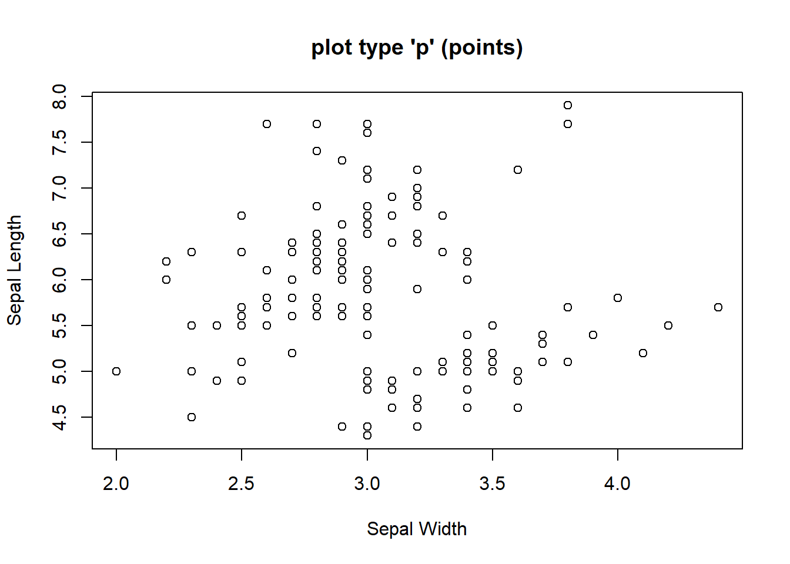
Let us go over the command. The first part of the call is plot which is the function for plotting data in base R. In the round brackets are the arguments in which we specify what the plot should look like. The Prepositions ~ Date part tells R which variables should be displayed and the type = "p" part tells R which type of plot we want (p stands for points, l for lines, b for both lines and points). The part data = plotdata tells R which data set to take the data from, and ylab = "Prepositions (Frequency)" and xlab = "Date (year of composition)" informs R about the axes’ labels. The part main = "plot type 'p' (points)" informs R about what we want as the main title of the plot.
In a next step, we will change the title, add two regression lines to the scatterplot (in the first case a linear and in the second case a smoothed regression line) and we will change the points as well as the color of the points.
# create simple scatter plot with regression lines (ablines)
plot(Prepositions ~ Date, # plot Prepositions by Date
type = "p", # plot type p (points)
data = plotdata, # data from data set iris
ylab = "Prepositions (Frequency)", # add y-axis label
xlab = "Date (year of composition)", # add x-axis label
main = "Scatterplot", # add title
pch = 20, # use point symbol 20 (filled circles)
col = "lightgrey" # define symbol colour as light grey
) # end drawing plot
abline( # add regression line (y~x)
lm(plotdata$Prepositions ~ plotdata$Date), # draw regression line of linear model (lm)
col="red" # define line colour as red
) # end drawing line
lines( # add line (x,y)
lowess(plotdata$Prepositions ~ plotdata$Date), # draw smoothed lowess line (x,y)
col="blue" # define line colour as blue
) # end drawing line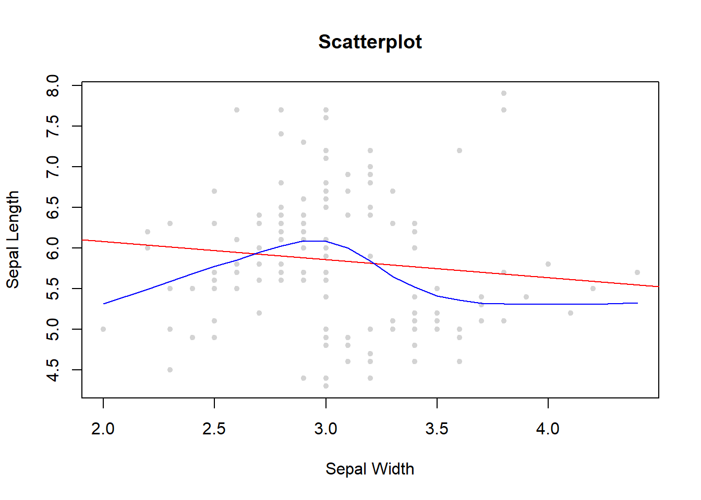
The only things that are different in the main call are the “pch” argument with has changed the points into filled dots (this is what the 20 stands for) and the “col” argument which we have specified as “lightgrey”. The regression lines are added using the “abline” and the “lines” argument.
Exercise Time!
Load the data set called “data03” and create a simple scatterplot showing the “Variable1” on the x-axis and “Variable2” on the y-axis.
Tipp: Use the code below to load the data.
# load data03
data03 <- read.delim("https://slcladal.github.io/data/data03.txt", sep = "\t", header = T)The data has the following format:
Scatter Plots in lattice
We now turn to data visualization in lattice. As the lattice package is already loaded, we can create a first simple scatter plot using the “xyplot” function form the “lattice” package. The scatter plot shows the relative frequency of prepositions by year of composition.
# create simple scatter plot
xyplot(Prepositions ~ Date,
# add y-axis label
ylab = "Prepositions (Frequency)",
# add x-axis label
xlab = "Date (year of composition)",
data = plotdata) 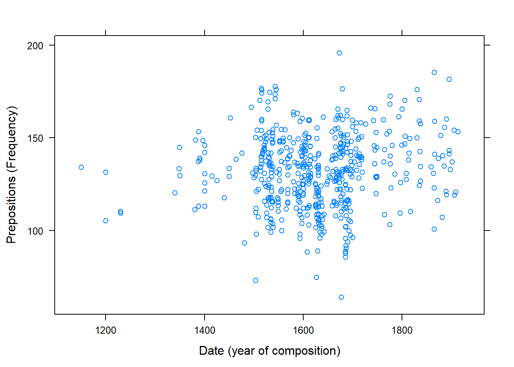
Since the “lattice” package was created to plot multiple relationships with a single call, we will now make use of that feature and plot multiple relationships at once. In addition, we will add a grid to the plot to improve comparability of data points within the graph. Thus, the scatter plot shows the relative frequency of prepositions by year of composition and genre.
# create scatter plots by species
xyplot(Prepositions ~ Date | Genre,
# add y-axis label
ylab = "Prepositions (Frequency)",
# add y-axis label
xlab = "Date (year of composition)",
# add grids to panels
grid = TRUE,
data = plotdata
) 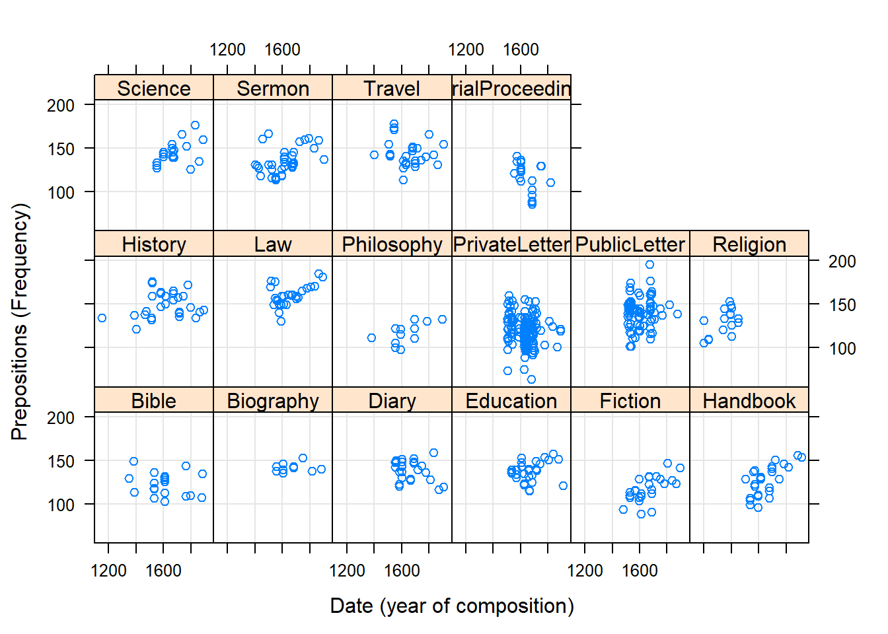
The only new code in the chunk above is the “| Genre” part. This part means that the relationship between Prepositions and Date should be displayed by Genre So, the |-symbol can be translated into “by”. The splitting of the plot into different panels for Genre is then done automatically.
Like in base, we can modify lattice-plots and specify, e.g. the symbols that are plotted or their color.
# create scatter plots by species
xyplot(Prepositions ~ Date | Genre,
ylab = "Prepositions (Frequency)",
xlab = "Date (year of composition)",
grid = TRUE,
# symbol type (20 = filled dots)
pch = 20,
# color of symbols
col = "black",
data = plotdata
) 
Next, we will use the ggplot2 package to create a scatter plot.
Scatter Plots in ggplot2
We now turn to data visualization using ggplot. As the ggplot2 package is already loaded, we create a very basic scatterplot in ggplot2 using the geom_point function to show the advantages of creating visualizations in this environment.
# create simple scatter plot
# use data set "plotdata"
ggplot(plotdata,
# define axes
aes(x= Date,
y= Prepositions)) +
# define plot type
geom_point() 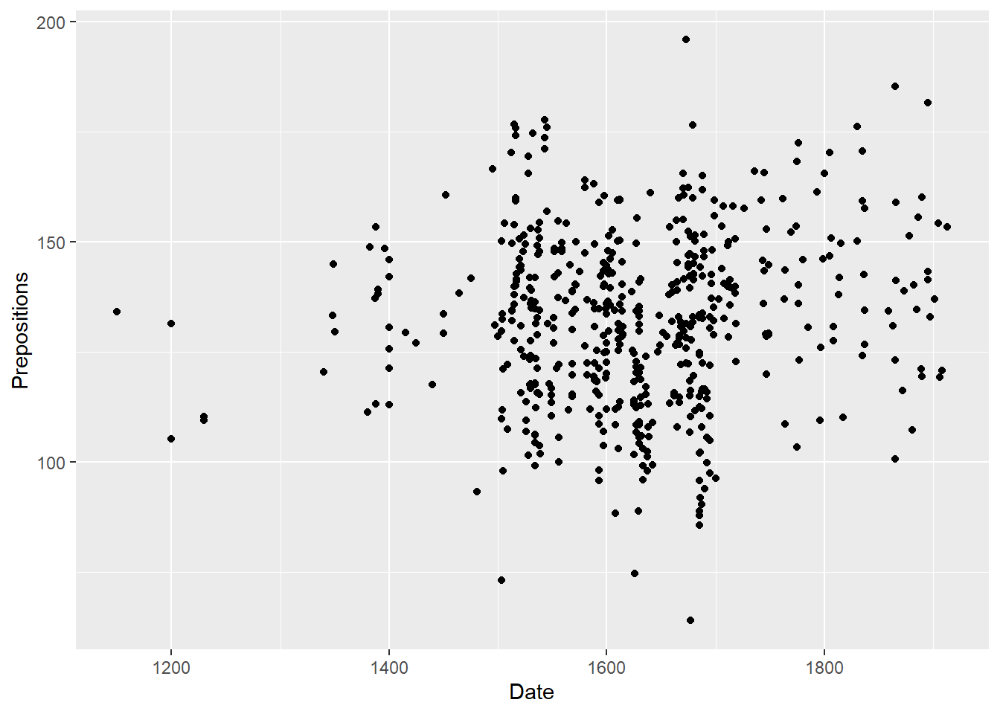
Let’s go over the code above. The function call for plotting in “ggplot2” is simply “ggplot”. This function takes the data set as its first argument and then requires aesthetics. The aesthetics are defined within the “ggplot” function as the arguments of “aes”. The “aes” function takes the axes as the arguments (in the current case). Then, we need to define the type of plot that we want. As we want a scatter plot with points, we add the “geom_point()” function without any arguments (as we do not want to specify the size, colour, and shape of the points just yet).
The advantage of “ggplot2” is that is really easy to modify the plot by adding new layers and to change the basic outlook by modifying the theme which is what we will do in the code below.
ggplot(plotdata,
# define axes
aes(x=Date,
y= Prepositions,
# define to color by Species
color = GenreRedux)) +
# define plot type
geom_point() +
# define theme as black and white (bw)
theme_bw() 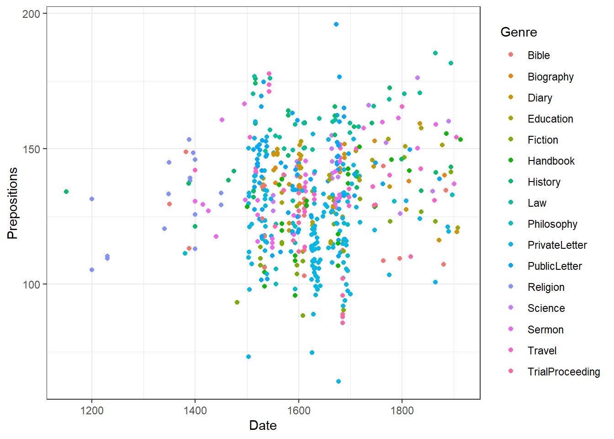
The example above is intended to show that creating ggplots is can be very simple but “ggplot2” is extremely flexible and thus allows us to modify the plot in various ways. To exemplify how a ggplot may be modified, we will change the color of the dots (and use the colors that we have specified earlier), add a white rather than a gray background.
# create scatter plot colored by genre
ggplot(plotdata, aes(x=Date, y= Prepositions, color = GenreRedux)) +
geom_point() +
theme_bw() +
scale_color_manual(values = mycol)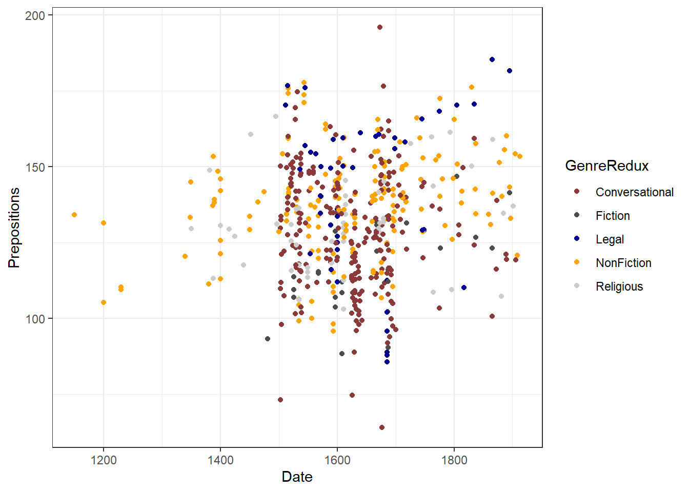
The white background is created by specifying the theme as a black and white theme (theme_bw()) while the colour of the dots is changed by specifying that the color should be applied by Species (color = GenreRedux). Then, the colours to be used are defined in the function scale_color_manual.
Using symbols in scatter plots
We can now specify the symbols in the scatterplot.
# create scatter plot colored by genre
ggplot(plotdata, aes(Date, Prepositions, color = GenreRedux, shape = GenreRedux)) +
geom_point() +
guides(shape=guide_legend(override.aes=list(fill=NA))) +
scale_shape_manual(name = "Genre",
breaks = names(table(plotdata$GenreRedux)),
values = 1:5) +
scale_color_manual(name = "Genre",
breaks = names(table(plotdata$GenreRedux)),
values = mycol) +
theme_bw() +
theme(legend.position="top")Dot plots with error bars
In addition, we can add regression lines with error bars by Species and, if we want to show separate windows for the plots, we can use the “facet_grid” or “facet_wrap” function and define by which variable we want to create different panels.
# create scatter plot colored by genre in different panels
ggplot(plotdata, aes(Date, Prepositions, color = Genre)) +
facet_wrap(vars(Genre), ncol = 4) +
geom_point() +
geom_smooth(method = "lm", se = F) +
theme_bw() +
theme(legend.title = element_blank(),
axis.text.x = element_text(size=8, angle=90))## `geom_smooth()` using formula 'y ~ x'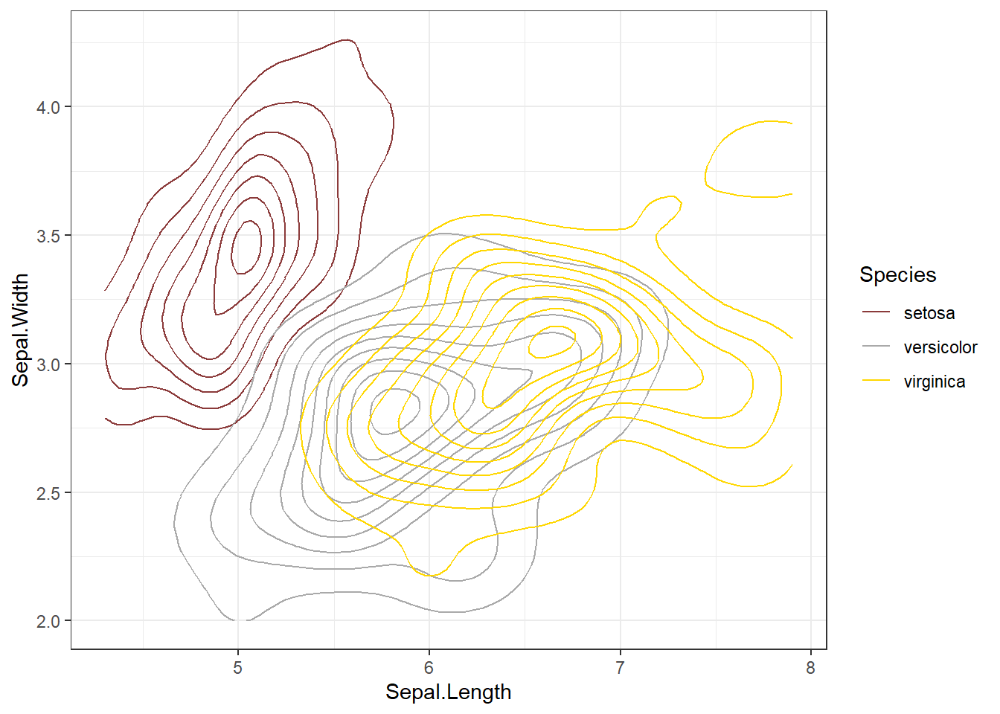
If we only want to show the lines, we simply drop the “geom_point” function.
# create scatter plot colored by genre in different panels
ggplot(plotdata, aes(x=Date, y= Prepositions, color = Genre)) +
facet_wrap(vars(Genre), ncol = 4) +
geom_smooth(method = "lm", se = F) +
theme_bw() +
theme(legend.title = element_blank(),
axis.text.x = element_text(size=8, angle=90))## `geom_smooth()` using formula 'y ~ x'
Another option is to plot density layers instead of plotting the data points.
# create scatter density plot
ggplot(plotdata, aes(x=Date, y= Prepositions, color = GenreRedux)) +
facet_wrap(vars(GenreRedux), ncol = 5) +
theme_bw() +
geom_density_2d() +
theme(legend.position = "top",
legend.title = element_blank(),
axis.text.x = element_text(size=8, angle=90))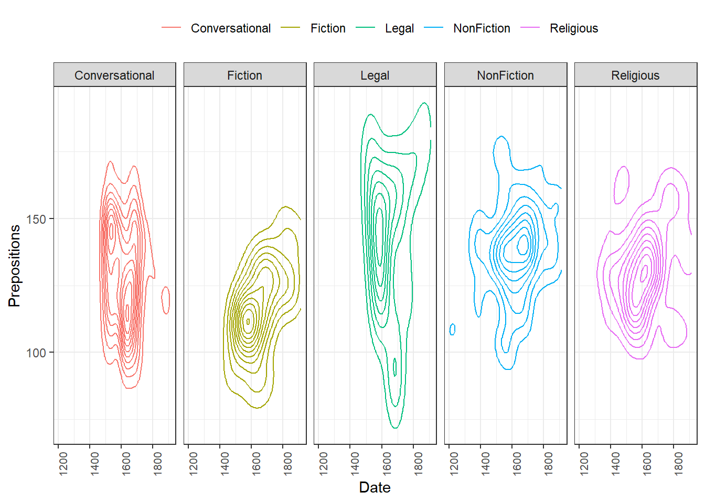
Although these are not scatterplots, plots with dot-symbols are very flexible and can be extended to show properties of the distribution of values. One way to create such a plot is to plot means as dot-symbols and add error bars to provide information about the underlying distribution. The plot below illustrates such a plot and additionally shows how plots can be further customized.
# scatter plot with error bars
ggplot(plotdata, aes(x=reorder(Genre, Prepositions, mean), y= Prepositions, group = Genre)) +
# add title
ggtitle("Prepositions by Genre") +
# create a dot at means
stat_summary(fun.y = mean, geom = "point",
# means by Species
aes(group= Genre)) +
# bootstrap data
stat_summary(fun.data = mean_cl_boot,
# add error bars
geom = "errorbar", width = 0.2) +
# def. y-axis range
coord_cartesian(ylim = c(100, 200)) +
# def. font size
theme_bw(base_size = 15) +
# def. x- and y-axis
theme(axis.text.x = element_text(size=10, angle = 90),
axis.text.y = element_text(size=10, face="plain")) +
# def. axes labels
labs(x = "Genre", y = "Prepositions (Frequency)") +
# def. to col.
scale_color_manual(guide = FALSE) ## Warning: `fun.y` is deprecated. Use `fun` instead.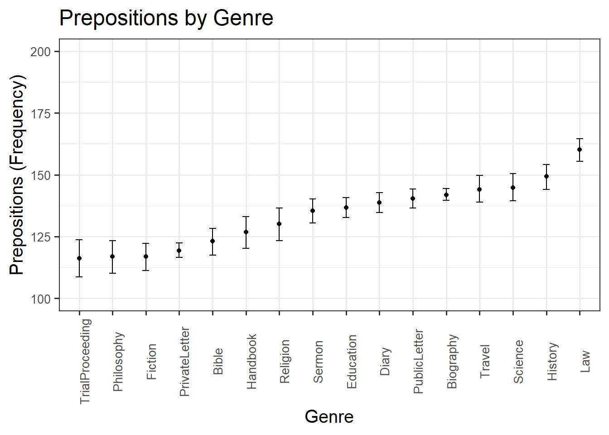
In the following, we will simply go over the most common types of graphs and use examples to show what they look like and how they can be created. The main graph types we will have a look at are:
- line graphs (“geom_line” and “geom_smooth”)
- bar plots (“geom_bar”)
- boxplots (“geom_box” and “geom_violin”)
- density plots (“geom_density”)
We are now in a position to start creating line graphs with ggplot.
Line Graphs
Line graphs are used when we have numeric values that are linked (in one way or another) because they come from the same speaker or genre as in our case).
plotdata %>%
group_by(DateRedux, GenreRedux) %>%
summarise(Frequency = mean(Prepositions)) %>%
ggplot(aes(x=DateRedux, y= Frequency, group= GenreRedux, color = GenreRedux)) +
# add geom layer with lines
geom_line()## `summarise()` regrouping output by 'DateRedux' (override with `.groups` argument)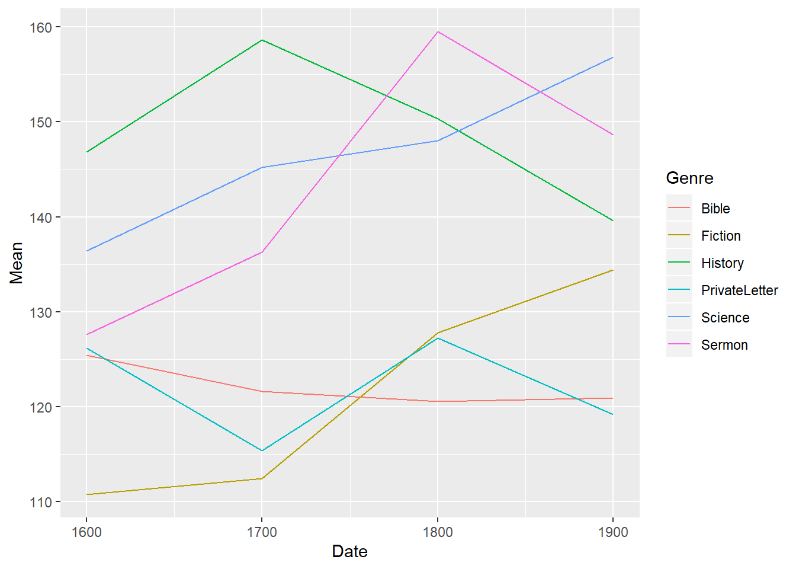
Smoothed line graphs
Another very useful function when creating line graphs with “ggplot” is “geom_smooth” which smoothes the lines to be drawn.
ggplot(plotdata, aes(x=DateRedux, y= Prepositions, group= GenreRedux, color = GenreRedux)) +
# add geom layer with lines
geom_smooth()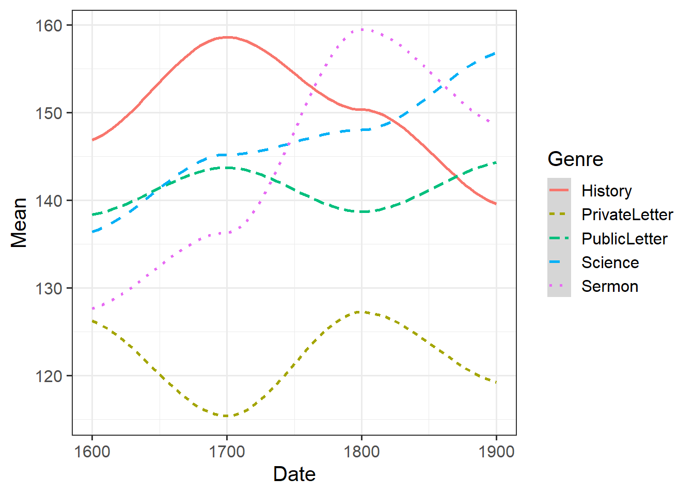
As this smoothed line graph is extremely useful, we will customize it to show how to modify your graph.
# define aesthetics
ggplot(plotdata, aes(x=Date, y= Prepositions, color = GenreRedux, linetype = GenreRedux)) +
# add geom layer with lines
geom_smooth(se = F) +
# legend without background color
guides(color=guide_legend(override.aes=list(fill=NA))) +
# def. legend position
theme(legend.position="top") +
# def. linetype
scale_linetype_manual(values=c("twodash", "dashed", "dotdash", "dotted", "solid"),
# def. legend header
name=c("Genre"),
# def. linetypes
breaks = names(table(plotdata$GenreRedux)),
# def. labels
labels = names(table(plotdata$GenreRedux))) +
# def. col.
scale_colour_manual(values=mycol,
# define legend header
name=c("Genre"),
# define elements
breaks=names(table(plotdata$GenreRedux)),
# define labels
labels = names(table(plotdata$GenreRedux))) +
# add x-axis label
labs(x = "Year") +
# customize x-axis tick positions
scale_x_continuous(breaks=seq(1100, 1900, 100),
# add labels to x-axis tick pos.
labels=seq(1100, 1900, 100)) +
# add y-axis label
scale_y_continuous(name="Relative frequency \n(per 1,000 words)",
# customize tick y-axis
limits=c(100, 200)) +
# define theme as black and white
theme_bw(base_size = 10) ## `geom_smooth()` using method = 'loess' and formula 'y ~ x'## Warning: Removed 25 rows containing non-finite values (stat_smooth).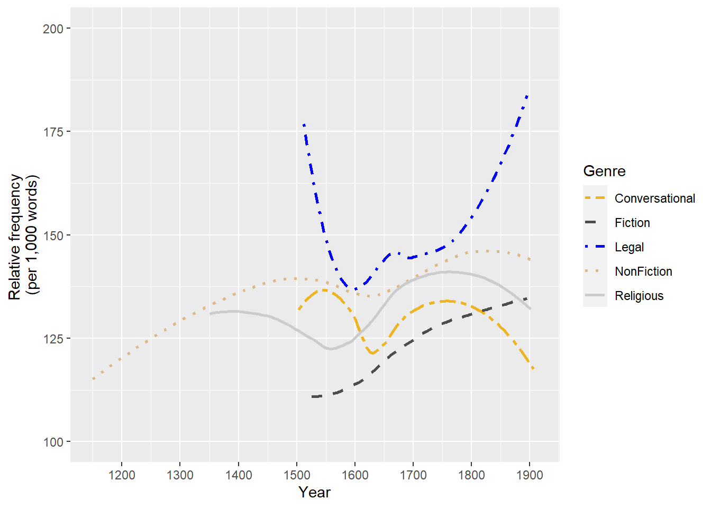
Although the code for the customized smoothed line graph is much longer and requires addition specifications, it is a very nice way to portrait the development over time.
Line graphs for Likert data
A special case of line graphs is used when dealing with Likert-scaled variables. In such cases, the line graph displays the density of cumulative frequencies of responses. The difference between the cumulative frequencies of responses displays differences in preferences. We will only focus on how to create such graphs using the “ggplot” environment here as it has an inbuild function (“ecdf”) which is designed to handle such data.
In a first step, we create a data set which consists of a Likert-scaled variable. The fictitious data created here consists of rating of students from three courses about how satisfied they were with their language-learning course. The response to the Likert item is numeric so that “strongly disagree/very dissatisfied” would get the lowest and “strongly agree/very satisfied” the highest numeric value.
likertdata <- read.delim("https://slcladal.github.io/data/likertdata1.txt", header = TRUE)
# inspect data
datatable(likertdata, rownames = FALSE, filter="top", options = list(pageLength = 5, scrollX=T))Now that we have data resembling a Likert-scaled item from a questionnaire, we will display the data in a cumulative line graph.
# create cumulative density plot
ggplot(likertdata,aes(x = Satisfaction, color = Course)) +
geom_step(aes(y = ..y..), stat = "ecdf") +
labs(y = "Cumulative Density") +
scale_x_discrete(limits = 1:5, breaks = 1:5,
labels=c("very dissatisfied", "dissatisfied", "neutral", "satisfied", "very satisfied")) +
scale_colour_manual(values = mycol) ## Warning: Continuous limits supplied to discrete scale.
## Did you mean `limits = factor(...)` or `scale_*_continuous()`?
The satisfaction of the German course was the lowest as the red line shows the highest density (frequency of responses) of “very dissatisfied” and “dissatisfied” ratings. The students in our fictitious data set were most satisfied with the Chinese course as the blue line is the lowest for “very dissatisfied” and “dissatisfied” ratings while the difference between the courses shrinks for “satisfied” and “very satisfied”. The Japanese language course is in-between the German and the Chinese course.
Pie charts
Most commonly, the data for visualization comes from tables of absolute frequencies associated with a categorical or nominal variable. The default way to visualize such frequency tables are pie charts and bar plots.
In a first step, we modify the original data to get counts and percentages. The data represents the number of documents per time period and the percentage of those documents across all time periods.
# create bar plot data
bardata <- plotdata %>%
dplyr::mutate(DateRedux = factor(DateRedux)) %>%
group_by(DateRedux) %>%
dplyr::summarise(Frequency = n()) %>%
dplyr::mutate(Percent = round(Frequency/sum(Frequency)*100, 1))## `summarise()` ungrouping output (override with `.groups` argument)# inspect data
datatable(bardata, rownames = FALSE, filter="top", options = list(pageLength = 5, scrollX=T))Before creating bar plots, we will briefly turn to pie charts because pie charts are very common despite suffering from certain shortcomings. Consider the following example which highlights some of the issues that arise when using pie charts. In base R, we cerate pie charts using the pie function as shown below.
pie(bardata$Percent,
col = mycol,
labels = bardata$Percent)
legend("topright", names(table(bardata$DateRedux)),
fill = mycol)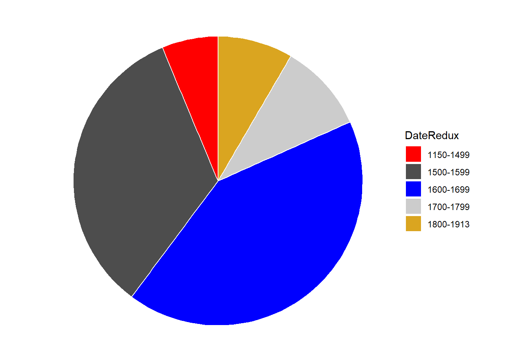
In ggplot, we create pie charts by using the geom_bar and then define `coord_polar(“y”, start=0). In contrast to base R, the labeling is not as easy as in base R. We will thus start with a pie chart without labels and then add the labels in a next step.
ggplot(bardata, aes("", Percent, fill = DateRedux)) +
geom_bar(stat="identity", width=1, color = "white") +
coord_polar("y", start=0) +
scale_fill_manual(values = mycol) +
theme_void()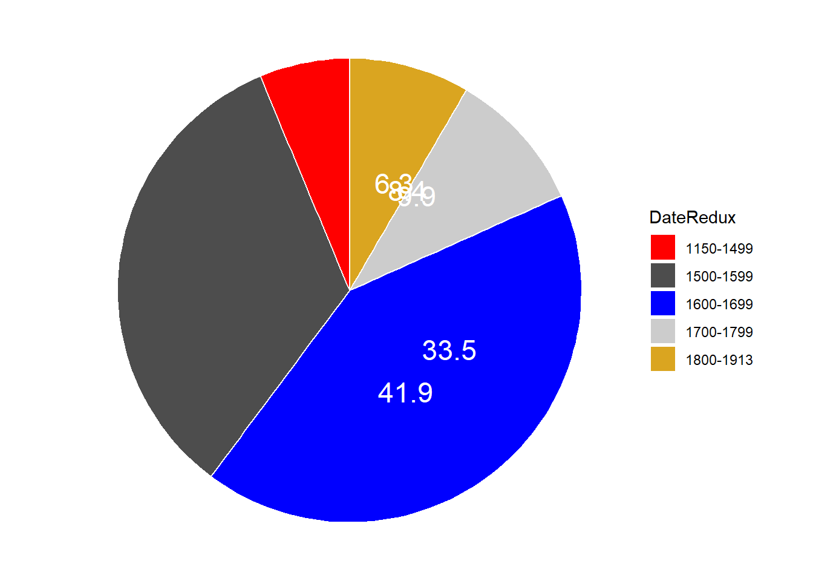
If the slices of the pie chart are not labelled, it is difficult to see which slices are smaller or bigger compared to other slices. This problem can easily be avoided when using a bar plot instead.
The labelling of pie charts is, however, somewhat tedious as the positioning is tricky. Below is an example for adding labels without specification.
# create pie chart
ggplot(bardata, aes("", Percent, fill = DateRedux)) +
geom_bar(stat="identity", width=1, color = "white") +
coord_polar("y", start=0) +
scale_fill_manual(values = mycol) +
theme_void() +
geom_text(aes(y = Percent, label = Percent), color = "white", size=6)To place the labels where they make sense, we will add another variable to the data called “Position”.
piedata <- bardata %>%
dplyr::arrange(desc(DateRedux)) %>%
dplyr::mutate(Position = cumsum(Percent)- 0.5*Percent)
# inspect data
datatable(piedata, rownames = FALSE, filter="top", options = list(pageLength = 5, scrollX=T))Now that we have specified the position, we can include it into the pie chart.
# create pie chart
ggplot(piedata, aes("", Percent, fill = DateRedux)) +
geom_bar(stat="identity", width=1, color = "white") +
coord_polar("y", start=0) +
scale_fill_manual(values = mycol) +
theme_void() +
geom_text(aes(y = Position, label = Percent), color = "white", size=6)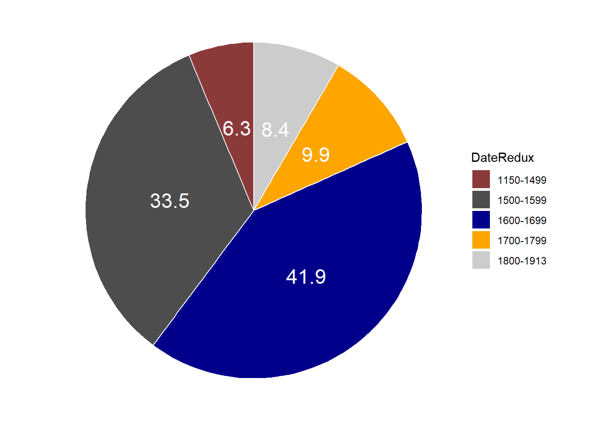
Bar plots
Like pie charts, bar plot display frequency information across categorical variable levels.
Bar plots in base R
In base R, we use the barplot function to create barplots. The barplot function is very flexible but takes a table with frequency counts as its main argument. We can also specify axes labels, a title, the color of the bras, and the axes limits. We specify text, grids, and boxes separately after the barplot function call.
# create simple scatter plot
barplot(table(plotdata$DateRedux), # plot Texts by DateRedux
ylab = "Texts (Frequency)", # add y-axis label
xlab = "Period of composition", # add x-axis label
main = "bar plot in base R", # add title
col = mycol, # add colors
ylim = c(0, 250) # define y-axis limits
) # end drawing plot
grid() # add grid
text(seq(0.7, 5.5, 1.2), # add label positions (x-axis)
table(plotdata$DateRedux)+10, # add label positions (y-axis)
table(plotdata$DateRedux)) # add labels
box() # add box
To create grouped bar plots, we tabulate the variables that we are interested in. In the this example, we group by Region as shown below.
# create simple scatter plot
barplot(table(plotdata$DateRedux, plotdata$Region), # plot Texts by DateRedux
beside = T, # bars beside each other
ylab = "Texts (Frequency)", # add y-axis label
xlab = "Period of composition", # add x-axis label
main = "grouped bar plot in base R", # add title
col = mycol, # add colors
ylim = c(0, 250) # define y-axis limits
) # end drawing plot
grid() # add grid
text(c(seq(1.5, 5.5, 1.0), seq(7.5, 11.5, 1.0)), # add label positions (x-axis)
table(plotdata$DateRedux, plotdata$Region)+10, # add label positions (y-axis)
table(plotdata$DateRedux, plotdata$Region)) # add labels
legend("topleft", names(table(plotdata$DateRedux)), # add legend
fill = mycol) # add colors
box() # add box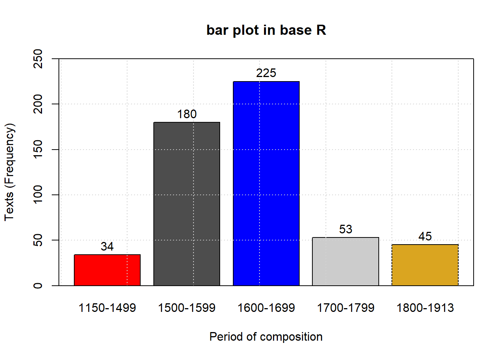
To transpose the plot, i.e. showing the Frequencies on the x- rather than the y-axis, we set the argument horiz to TRUE.
# create simple scatter plot
barplot(table(plotdata$DateRedux), # plot Texts by DateRedux
ylab = "Texts (Frequency)", # add y-axis label
xlab = "Period of composition", # add x-axis label
col = mycol, # add colors
horiz = T, # horizontal bars
xlim = c(0, 250), # define x-axis limits
las = 2, # change direction of axis labels
cex.names = .5) # reduce font of axis labels
box() # add box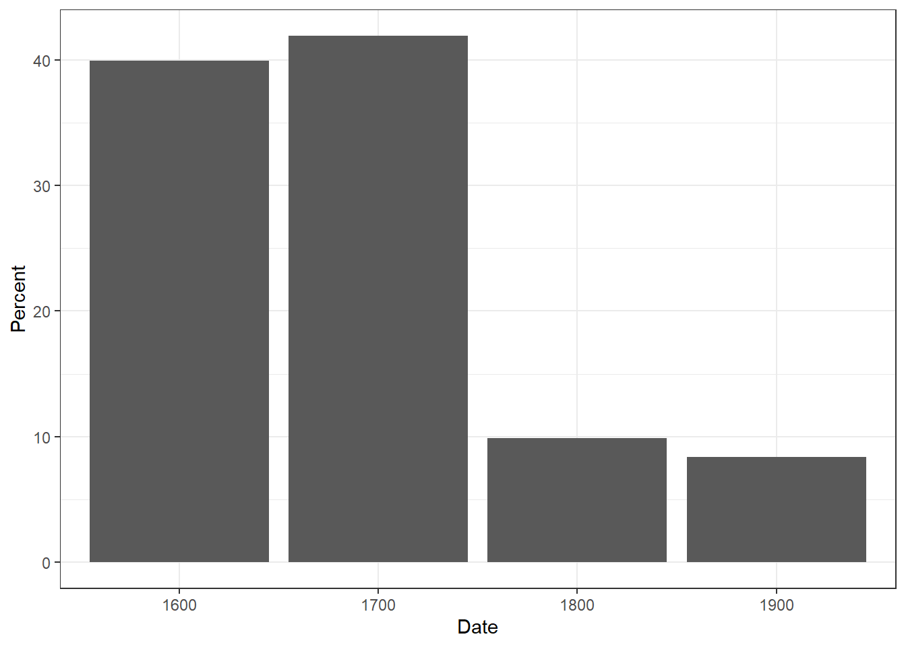
Bar plots in ggplot
The creation of barplots in ggplot works just like other types of visualizations in this framework. We first define the data and the aesthetics and then use the geom_bar to create a barplot.
# bar plot
ggplot(bardata, aes(DateRedux, Percent, fill = DateRedux)) +
geom_bar(stat="identity") + # determine type of plot
theme_bw() + # use black & white theme
# add and define text
geom_text(aes(y = Percent-5, label = Percent), color = "white", size=3) +
# add colors
scale_fill_manual(values = mycol) +
# supress legend
theme(legend.position="none")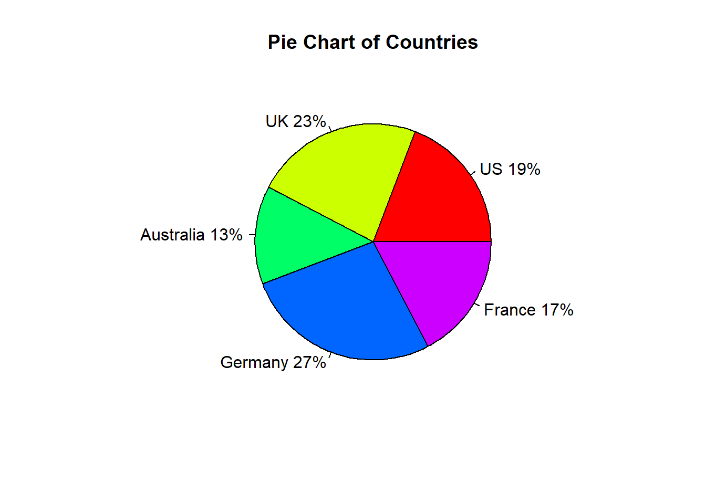
Compared with the pie chart, it is much easier to grasp the relative size and order of the percentage values which shows that pie charts are unfit to show relationships between elements in a graph and, as a general rule of thumb, should be avoided.
Bar plot can be grouped to add another layer of information which is particularly useful when dealing with frequency counts across multiple categorical variables. To create grouped bar plots, we plot Region while including DateRedux as the fill argument. Also, we use the command position=position_dodge().
# bar plot
ggplot(plotdata, aes(Region, fill = DateRedux)) +
geom_bar(position = position_dodge(), stat = "count") +
theme_bw() +
scale_fill_manual(values = mycol)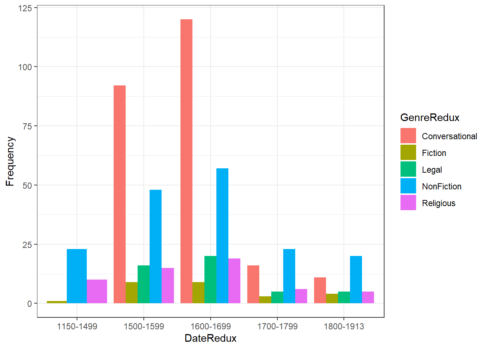 If we leave out the position=position_dodge() argument, we get a stacked bar plot as shown below.
# bar plot
ggplot(plotdata, aes(DateRedux, fill = GenreRedux)) +
geom_bar(stat="count") +
theme_bw() +
scale_fill_manual(values = mycol) 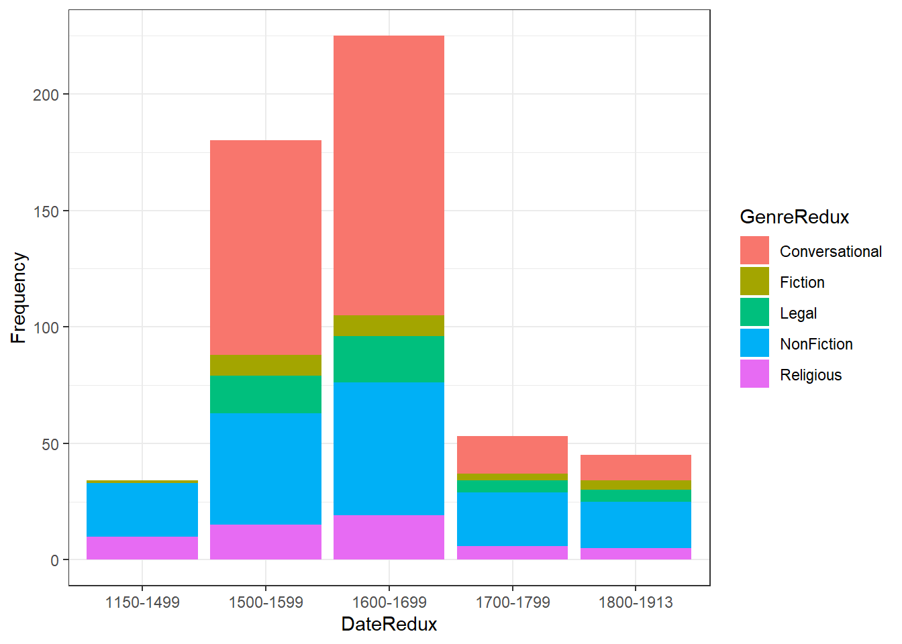
One issue to consider when using stacked bar plots is the number of variable levels: when dealing with many variable levels, stacked bar plots tend to become rather confusing. This can be solved by either collapsing infrequent variable levels or choose a colour palette that reflects some other inherent piece of information such as formality (e.g. blue) versus informality (e.g. red).
Stacked bar plots can also be normalized so that changes in percentages become visible. This is done by exchanging position=position_dodge() with position="fill".
# bar plot
ggplot(plotdata, aes(DateRedux, fill = GenreRedux)) +
geom_bar(stat="count", position="fill") +
theme_bw() +
scale_fill_manual(values = mycol) +
labs(y = "Probability")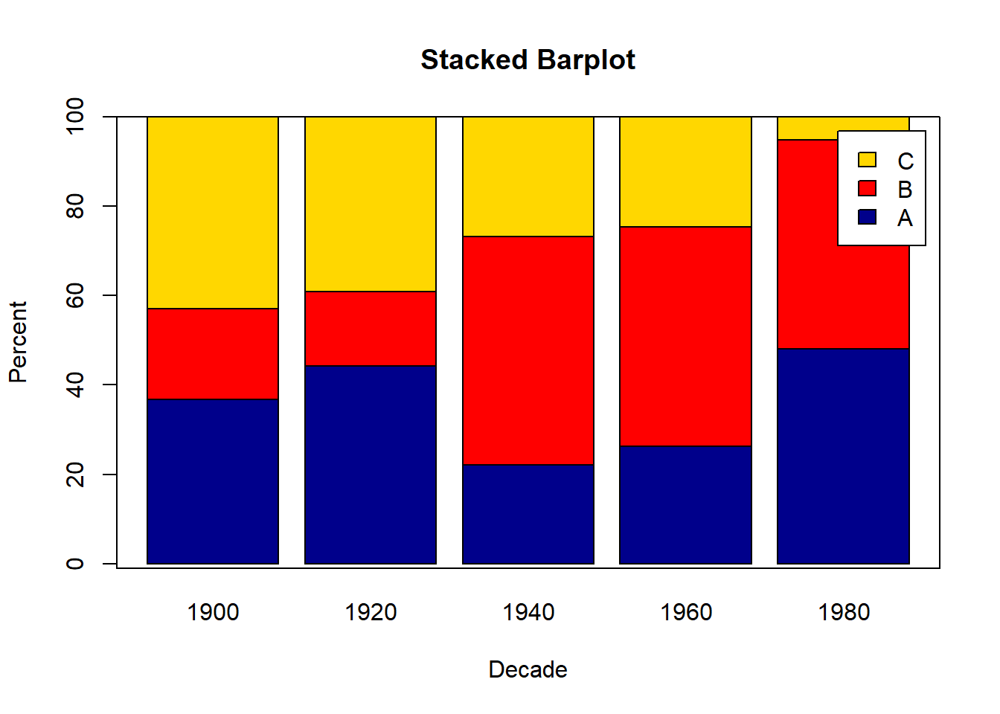
Bar plots for Likert data
Bar plots are particularly useful when visualizing data obtained through Likert items. As this is a very common issue that empirical researchers face. There are two basic ways to display Likert items using bar plots: grouped bar plots and more elaborate scaled bar plots.
Although we have seen above how to create grouped bar plots, we will repeat it here with the language course example used above when we used cumulative density line graphs to visualise how to display Likert data.
In a first step, we recreate the data set which we have used above. The data set consists of a Likert-scaled variable (Satisfaction) which represents rating of students from three courses about how satisfied they were with their language-learning course. The response to the Likert item is numeric so that “strongly disagree/very dissatisfied” would get the lowest and “strongly agree/very satisfied” the highest numeric value.
# create likert data
newlikertdata <- likertdata %>%
group_by(Course, Satisfaction) %>%
mutate(Frequency = n())
newlikertdata <- unique(newlikertdata)
# inspect data
head(newlikertdata)## # A tibble: 6 x 3
## # Groups: Course, Satisfaction [6]
## Course Satisfaction Frequency
## <chr> <int> <int>
## 1 Chinese 1 20
## 2 Chinese 2 30
## 3 Chinese 3 25
## 4 Chinese 4 10
## 5 Chinese 5 15
## 6 German 1 40Now that we have data resembling a Likert-scaled item from a questionnaire, we will display the data in a cumulative line graph.
# create grouped bar plot
ggplot(newlikertdata, aes(Satisfaction, Frequency, fill = Course)) +
geom_bar(stat="identity", position=position_dodge()) +
# define colors
scale_fill_manual(values=mycol) +
# add text and define colour
geom_text(aes(label=Frequency), vjust=1.6, color="white",
# define text position and size
position = position_dodge(0.9), size=3.5) +
scale_x_discrete(limits=c("1","2","3","4","5"), breaks=c(1,2,3,4,5),
labels=c("very dissatisfied", "dissatisfied", "neutral", "satisfied",
"very satisfied")) +
theme_bw()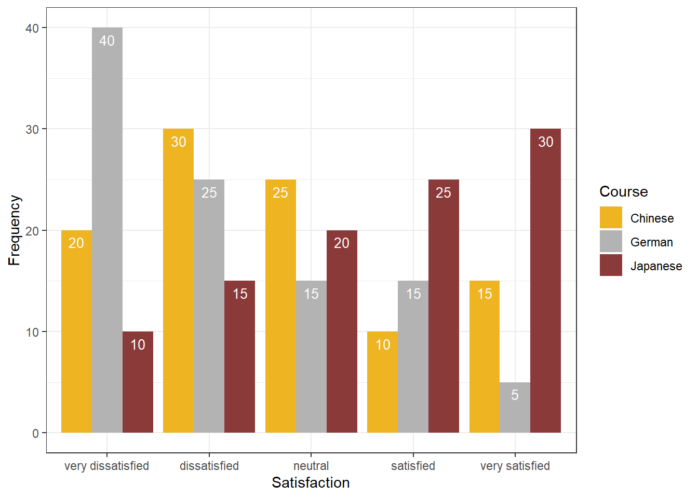
Another and very interesting way to display such data is by using the Likert package. In a first step, we need to activate the package, clean the data, and extract a subset for the data visualization example.
# load data
data(pisaitems) # use a provided dataset called pisaitems
# extract subset from data for visualization
items28 <- pisaitems[, substr(names(pisaitems), 1, 5) == "ST24Q"]
# transform into a likert object
questionl28 <- likert(items28)
# summarize data
summary(questionl28) After extracting a sample of the data, we plot it to show how the Likert data can be displayed.
# plot likert data
plot(questionl28)Comparative bar plots with negative values
Another frequent task is to evaluate the divergence of values from a reference, for instance when dealing with language learners where native speakers serve as a reference or target. To illustrate how such data can be visualized, we load the scales package as we want to create a bar plot in which we show the divergence of learners from native speakers regarding certain features and how that divergence changes over time. Then, we create an example data set which mirrors the format we expect for the actual data.
# create a vector with values called Test1
Test1 <- c(11.2, 13.5, 200, 185, 1.3, 3.5)
# create a vector with values called Test2
Test2 <- c(12.2, 14.7, 210, 175, 1.9, 3.0)
# create a vector with values called Test3
Test3 <- c(13.2, 15.1, 177, 173, 2.4, 2.9)
# combine vectors in a data frame
testdata <- data.frame(Test1, Test2, Test3)
# add rownames
rownames(testdata) <- c("Feature1_Student",
"Feature1_Reference",
"Feature2_Student",
"Feature2_Reference",
"Feature3_Student",
"Feature3_Reference")
# inspect data
testdata We can now determine how the learners deviate from the native speakers.
# determine divergence from reference
# row 1 (student) minus row 2 (reference)
FeatureA <- t(testdata[1,] - testdata[2,])
# row 3 (student) minus row 4 (reference)
FeatureB <- t(testdata[3,] - testdata[4,])
# row 5 (student) minus row 6 (reference)
FeatureC <- t(testdata[5,] - testdata[6,])
# create data frame
plottable <- data.frame(rep(rownames(FeatureA), 3),
c(FeatureA, FeatureB, FeatureC),
c(rep("FeatureA", 3),
rep("FeatureB", 3),
rep("FeatureC", 3)))
# def. col. names
colnames(plottable) <- c("Test", "Value", "Feature")
# inspect data
plottable Finally, we graphically display the divergence using a bar plot.
# create plot
ggplot(plottable,
aes(Test, Value)) + # def. x/y-axes
# separate plots for each feature
facet_grid(vars(Feature), scales = "free_y") +
# create bars
geom_bar(stat = "identity", aes(fill = Test)) +
# black and white theme
theme_bw() +
# supress legend
guides(fill=FALSE) +
# def. colours
geom_bar(stat="identity", fill=rep(mycol[1:3], 3)) +
# axes titles
labs(x = "", y = "Score") 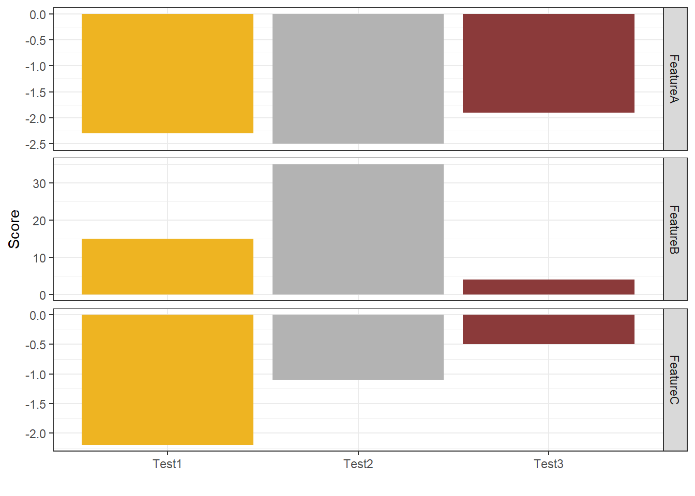
Boxplots
So far, we have plotted values but we have not plotted the underlying distributions. For instance, we have plotted mean values but not the variance within the distribution. One handy way to combine plotting general trends and their underlying distributions are boxplots.
Boxplots, or Box-and-Whisker Plots, are exploratory graphics first created by John W. Tukey and they show the relationships between categorical and numeric variables. They are very useful because they not only provide measures of central tendency (the median which is the line in the middle of the box) but they also offer information about the distribution of the data. To elaborate, fifty percent of data points fall within the box while seventy-five percent of data points fall within the whiskers (the lines which look like extended error bars): the box thus encompasses the interquartile range between the first and third quartile. The whiskers show the minimum and maximum values in the data and only outliers (data points that lie 1.5 times the interquartile range or more above the third quartile or 1.5 times the interquartile range or more below the first quartile. If the whiskers differ in length, then this means that the data is asymmetrically distributed.
# create data
boxdata <- plotdata %>%
dplyr::mutate(DateRedux = factor(DateRedux))
# inspect data
head(boxdata)Date Genre Text Prepositions Region GenreRedux DateRedux 1 1736 Science albin 166.01 North NonFiction 1700-1799 2 1711 Education anon 139.86 North NonFiction 1700-1799 3 1808 PrivateLetter austen 130.78 North Conversational 1800-1913 4 1878 Education bain 151.29 North NonFiction 1800-1913 5 1743 Education barclay 145.72 North NonFiction 1700-1799 6 1908 Education benson 120.77 North NonFiction 1800-1913
We will now create simple boxplots that show the distribution of prepositions per time period.
# create boxplot
ggplot(boxdata, aes(DateRedux, Prepositions, color = GenreRedux)) +
geom_boxplot(fill=mycol,
color="black") 
Another interesting feature of boxplots is that they allow us to visually get an idea whether categories differ significantly. Because if add “notch = T” and the notches of the boxplots do not overlap, then this is a very strong indication that the categories actually differ significantly (see below).
# create boxplot
ggplot(boxdata, aes(DateRedux, Prepositions, color = GenreRedux)) +
geom_boxplot(outlier.colour="red",
outlier.shape=2,
outlier.size=5,
notch=T,
fill=mycol,
color="black") 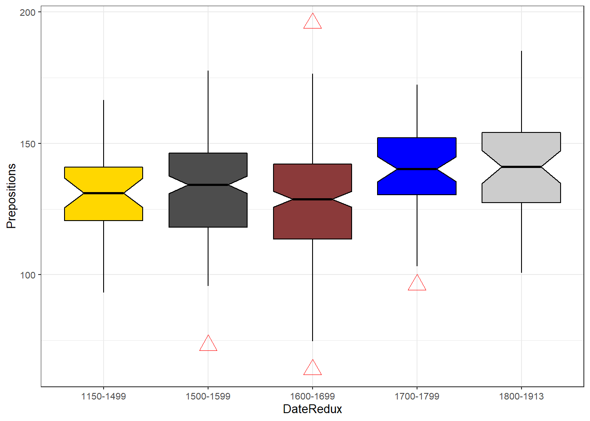
Word clouds
Word clouds visualize word frequencies of either single corpus or different corpora. Although word clouds are rarely used in academic publications, they are a common way to display language data and the topics of texts - which may be thought of as their semantic content. To exemplify how to use word clouds, we are going to have a look at rally speeches of Hillary Clinton and Donald Trump that were given during their 2016 campaigns. In a first step, we load and process the data as the relevant packages are already loaded.
# load and process speeches by clinton
clinton <- readLines("https://slcladal.github.io/data/Clinton.txt") %>%
paste(sep = " ", collapse = " ")
# load and process speeches by trump
trump <- readLines("https://slcladal.github.io/data/Trump.txt") %>%
paste(sep = " ", collapse = " ")After loading the data, we need to clean it.
# clean texts
docs <- Corpus(VectorSource(c(clinton, trump))) %>%
tm_map(removePunctuation) %>%
tm_map(removeNumbers) %>%
tm_map(tolower) %>%
tm_map(removeWords, stopwords("english")) %>%
tm_map(stripWhitespace) %>%
tm_map(PlainTextDocument)
# create term document matrix
tdm <- TermDocumentMatrix(docs) %>%
as.matrix()
colnames(tdm) <- c("Clinton","Trump")Next, we normalize the absolute frequencies of the terms in the document by converting them into relative frequencies.
# calculate rel. freq.
tdm[, 1] <- as.vector(unlist(sapply(tdm[, 1], function(x) round(x/colSums(tdm)[1]*1000, 0) )))
# calculate rel. freq.
tdm[, 2] <- as.vector(unlist(sapply(tdm[, 2], function(x) round(x/colSums(tdm)[2]*1000, 0) )))After processing the data, we can now create word clouds. However, there are different word clouds:
- (Common) word clouds
- Comparative clouds
- Commonality clouds
Common or simple word clouds simply show the frequency of word types while comparative word clouds show which word types are particularly overrepresented in one sub-corpus compared to another sub-corpus. Commonality word clouds show words that are shared and are thus particularly indistinctive for different sub-corpora.
Let us first inspect a common word cloud of the corpus.
# create word cloud
wordcloud(docs, max.words = 100,
colors = brewer.pal(6, "BrBG"),
random.order = FALSE)The common word cloud shows the frequencies of words regardless of who used them. In contrast, the comparative cloud shown below highlights words that differ most with respect to their frequencies in the sub-corpora under investigation.
# create comparison cloud
comparison.cloud(tdm,
max.words = 100,
random.order = FALSE,
colors = c("blue", "red"),
title.bg.colors="white",
bg.color = "black")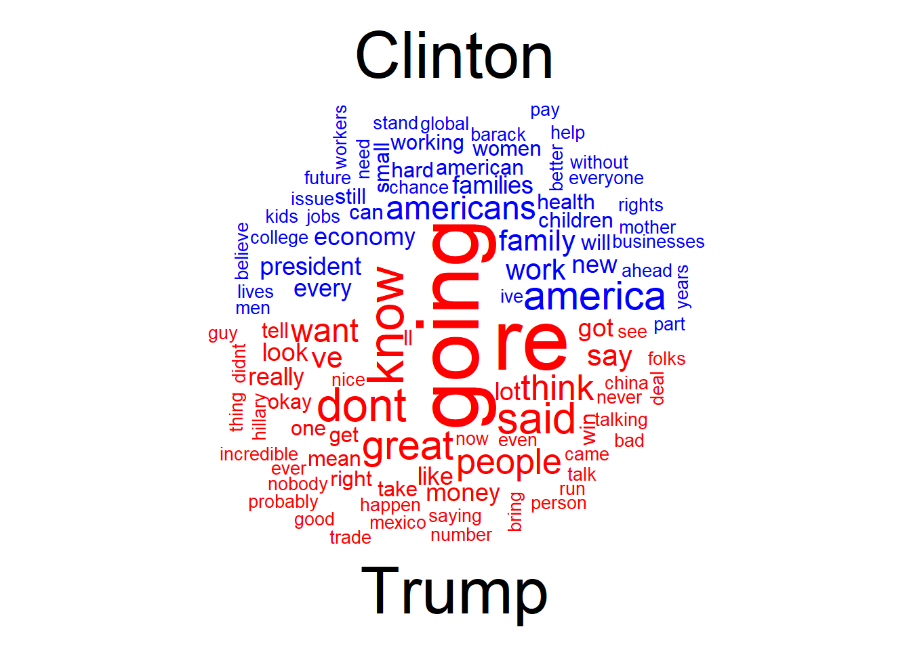
The opposite of comparative clouds are commonality clouds which highlight words that use with similar relative frequencies in the sub-corpora under investigation and that are therefore particularly indistinctive.
# create commonality cloud
commonality.cloud(tdm,
max.words = 100,
random.order = FALSE,
colors = brewer.pal(6, "Spectral"))At first, I thought that word clouds are simply a fancy but not very helpful way to inspect language data but I have to admit that word clouds really surprised me as they do appear to possess potential to provide an idea of what groups of people are talking about. The comparative word cloud shows that the Trump uses a lot of contractions (“’re”, “’ll”, etc.) and stresses concepts linked to the future (going) thereby stressing his vision of the US (great). In Contrast, Clinton did not use contractions but talked about Americans, work, the economy, and women.
Citation & Session Info
Schweinberger, Martin. 2020. Common Visualization Types in R. Brisbane: The University of Queensland. url: https://slcladal.github.io/basicgraphs.html (Version 2020.09.29).
@manual{schweinberger2020adviz,
author = {Schweinberger, Martin},
title = {Common Visualization Types in R},
note = {https://slcladal.github.io/basicgraphs.html},
year = {2020},
organization = {The University of Queensland, School of Languages and Cultures},
address = {Brisbane},
edition = {2020/09/29}
}sessionInfo()## R version 4.0.2 (2020-06-22)
## Platform: x86_64-w64-mingw32/x64 (64-bit)
## Running under: Windows 10 x64 (build 18362)
##
## Matrix products: default
##
## locale:
## [1] LC_COLLATE=German_Germany.1252 LC_CTYPE=German_Germany.1252
## [3] LC_MONETARY=German_Germany.1252 LC_NUMERIC=C
## [5] LC_TIME=German_Germany.1252
##
## attached base packages:
## [1] grid stats graphics grDevices utils datasets methods
## [8] base
##
## other attached packages:
## [1] wordcloud_2.6 RColorBrewer_1.1-2 DT_0.15 gridExtra_2.3
## [5] tidyr_1.1.2 SnowballC_0.7.0 stringr_1.4.0 tm_0.7-7
## [9] NLP_0.2-0 vcd_1.4-8 scales_1.1.1 likert_1.3.5
## [13] xtable_1.8-4 dplyr_1.0.2 ggplot2_3.3.2 lattice_0.20-41
## [17] knitr_1.30
##
## loaded via a namespace (and not attached):
## [1] jsonlite_1.7.1 splines_4.0.2 tmvnsim_1.0-2
## [4] assertthat_0.2.1 Formula_1.2-3 latticeExtra_0.6-29
## [7] yaml_2.2.1 slam_0.1-47 backports_1.1.10
## [10] pillar_1.4.6 glue_1.4.2 digest_0.6.25
## [13] checkmate_2.0.0 colorspace_1.4-1 htmltools_0.5.0
## [16] Matrix_1.2-18 plyr_1.8.6 psych_2.0.8
## [19] pkgconfig_2.0.3 purrr_0.3.4 jpeg_0.1-8.1
## [22] htmlTable_2.1.0 tibble_3.0.3 mgcv_1.8-31
## [25] generics_0.0.2 farver_2.0.3 ellipsis_0.3.1
## [28] withr_2.3.0 nnet_7.3-14 cli_2.0.2
## [31] mnormt_2.0.2 survival_3.1-12 magrittr_1.5
## [34] crayon_1.3.4 evaluate_0.14 fansi_0.4.1
## [37] nlme_3.1-148 MASS_7.3-51.6 xml2_1.3.2
## [40] foreign_0.8-80 data.table_1.13.0 tools_4.0.2
## [43] lifecycle_0.2.0 munsell_0.5.0 cluster_2.1.0
## [46] isoband_0.2.2 compiler_4.0.2 rlang_0.4.7
## [49] rstudioapi_0.11 htmlwidgets_1.5.1 crosstalk_1.1.0.1
## [52] base64enc_0.1-3 labeling_0.3 rmarkdown_2.3
## [55] gtable_0.3.0 reshape2_1.4.4 R6_2.4.1
## [58] zoo_1.8-8 utf8_1.1.4 Hmisc_4.4-1
## [61] stringi_1.5.3 parallel_4.0.2 Rcpp_1.0.5
## [64] vctrs_0.3.4 rpart_4.1-15 png_0.1-7
## [67] tidyselect_1.1.0 xfun_0.16 lmtest_0.9-38References
Healy, Kieran. 2018. Data Visualization: A Practical Introduction. Princeton University Press.
Wickham, Hadley. 2016. Ggplot2: Elegant Graphics for Data Analysis. springer.
Wilkinson, Leland. 2012. “The Grammar of Graphics.” In Handbook of Computational Statistics, edited by James E. Gentle, Wolfgang Karl H, and Yuichi Mori, 375–414. Springer.